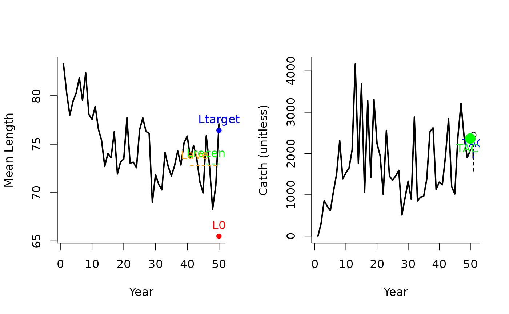
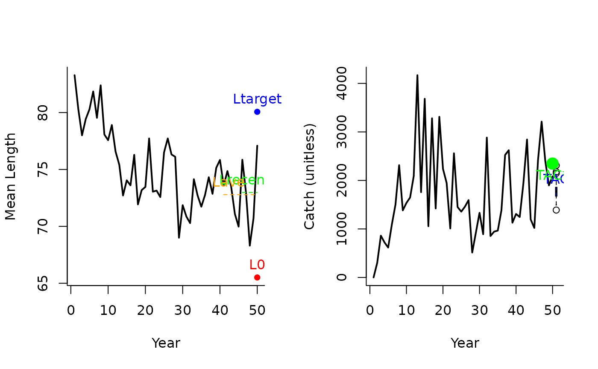
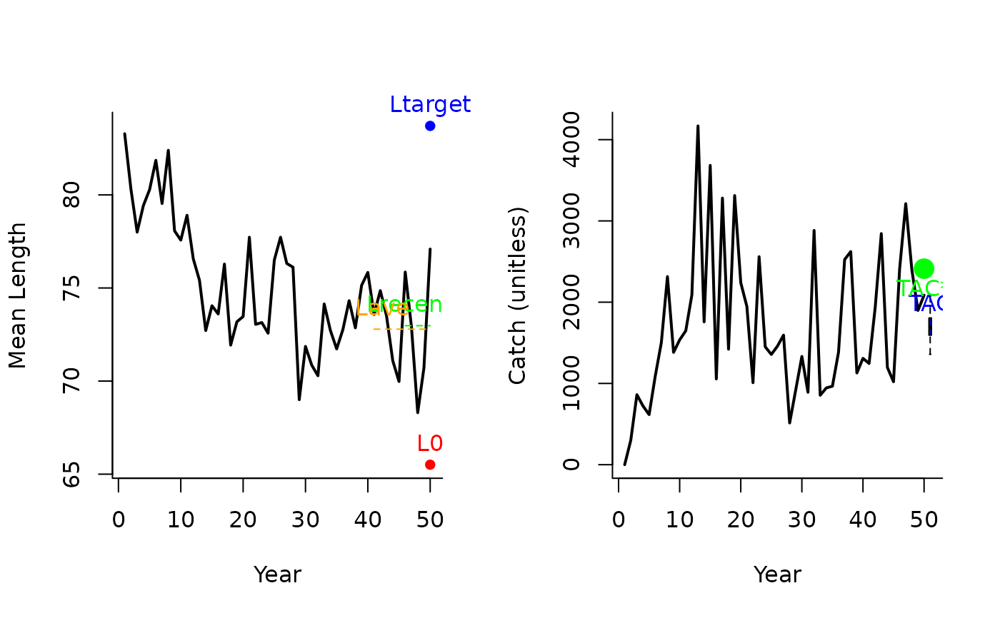
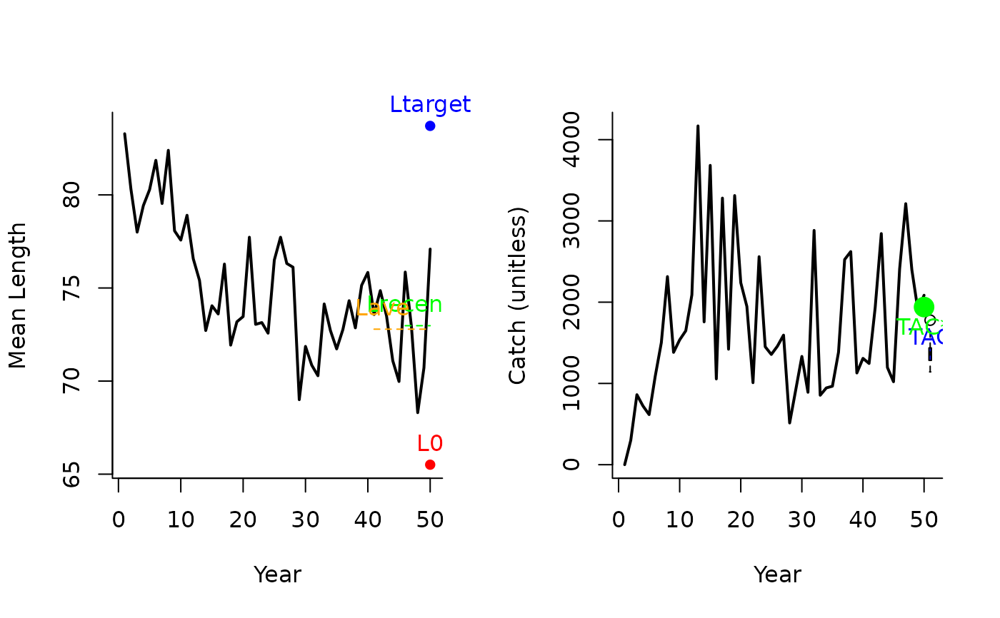
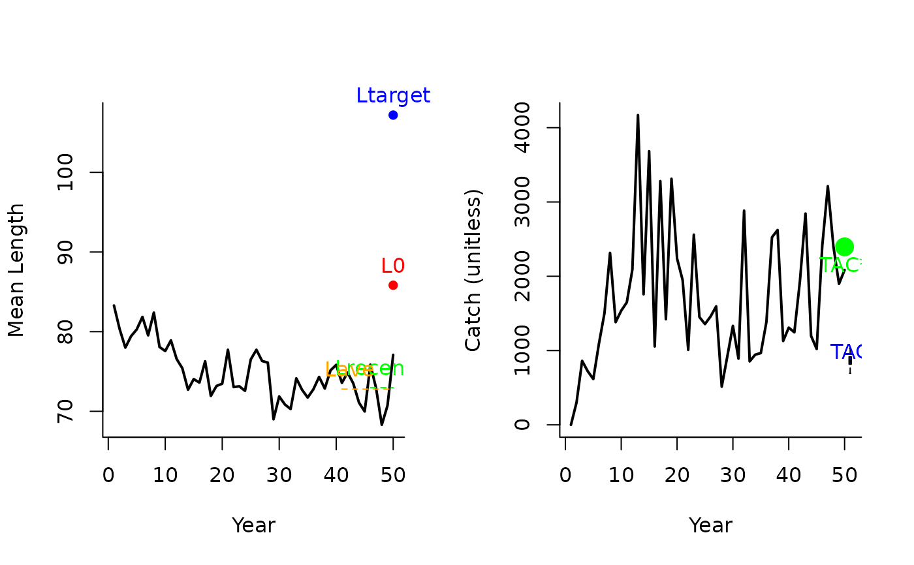

Length Target TAC MP
Ltarget1.RdA management procedure that incrementally adjusts the TAC to reach a target mean length in catches.
Usage
Ltarget1(x, Data, reps = 100, plot = FALSE, yrsmth = 5, xx = 0, xL = 1.05)
Ltarget2(x, Data, reps = 100, plot = FALSE, yrsmth = 5, xx = 0, xL = 1.1)
Ltarget3(x, Data, reps = 100, plot = FALSE, yrsmth = 5, xx = 0, xL = 1.15)
Ltarget4(x, Data, reps = 100, plot = FALSE, yrsmth = 5, xx = 0.2, xL = 1.15)
L95target(x, Data, reps = 100, plot = FALSE, yrsmth = 5, xx = 0, xL = 1.05)Arguments
- x
A position in the data object
- Data
A data object
- reps
The number of stochastic samples of the MP recommendation(s)
- plot
Logical. Show the plot?
- yrsmth
Years over which to calculate mean length.
- xx
Parameter controlling the fraction of mean catch to start using in first year
- xL
Parameter controlling the magnitude of the target mean length of catches relative to average length in catches.
Value
An object of class Rec-class with the TAC slot populated with a numeric vector of length reps
Details
Four target length MPs proposed by Geromont and Butterworth 2014. Tested by Carruthers et al. 2015.
The TAC is calculated as:
If \(L_\textrm{recent} \geq L_0\): $$\textrm{TAC} = 0.5 \textrm{TAC}^* \left[1+\left(\frac{L_\textrm{recent}-L_0}{L_\textrm{target}-L_0}\right)\right] $$
else: $$\textrm{TAC} = 0.5 \textrm{TAC}^* \left[\frac{L_\textrm{recent}}{L_0}^2\right] $$
where \(\textrm{TAC}^*\) is (1 - xx) mean catches from the last yrsmth historical years (pre-projection),
\(L_\textrm{recent}\) is mean length in last yrmsth years, \(L_0\) is (except for L95target) 0.9 average catch in the last
2 x yrsmth historical (pre-projection years) (\(L_\textrm{ave}\)), and \(L_\textrm{target}\) is
(except for L95target) xL \(L_\textrm{ave}\).
Functions
Ltarget1(): The least biologically precautionary TAC-based MP.Ltarget2(): Increasingly biologically precautionary (xL= 1.1).Ltarget3(): Increasingly biologically precautionary (xL= 1.1).Ltarget4(): The most biologically precautionary TAC-based MP (xL= 1.1,xx=0.2).L95target(): Same as Ltarget1 but here the target and limit mean lengths are based on the length at maturity distribution rather than an arbitrary multiplicative of the mean length
Required Data
See Data-class for information on the Data object
Ltarget1: Cat, LHYear, ML, Year
Ltarget2: Cat, LHYear, ML, Year
Ltarget3: Cat, LHYear, ML, Year
Ltarget4: Cat, LHYear, ML, Year
L95target: Cat, L50, LHYear, ML, Year
Rendered Equations
See Online Documentation for correctly rendered equations
References
Carruthers et al. 2015. Performance evaluation of simple management procedures. ICES J. Mar Sci. 73, 464-482.
Geromont, H.F., Butterworth, D.S. 2014. Generic management procedures for data-poor fisheries; forecasting with few data. ICES J. Mar. Sci. doi:10.1093/icesjms/fst232
See also
Other Length target MPs:
Lratio_BHI(),
LtargetE1()
Examples
Ltarget1(1, Data=MSEtool::SimulatedData, plot=TRUE)

#> TAC (median)
#> 1978.981
Ltarget2(1, Data=MSEtool::SimulatedData, plot=TRUE)

#> TAC (median)
#> 1792.583
Ltarget3(1, Data=MSEtool::SimulatedData, plot=TRUE)

#> TAC (median)
#> 1688.731
Ltarget4(1, Data=MSEtool::SimulatedData, plot=TRUE)

#> TAC (median)
#> 1371.336
L95target(1, Data=MSEtool::SimulatedData, plot=TRUE)

#> TAC (median)
#> 853.8575